Diseño Estético de Casas Campestres
Arquitectura Campestre & Descanso
Renders fotorrealistas para casas campestres y fincas de recreo. Visualizamos la integración con el paisaje y detalles de arquitectura colonial.
El Reto
El arquitecto requería validar la mezcla de materiales rústicos y modernos sin que la vivienda perdiera su esencia colonial tradicional.
La Solución
Generamos renders detallados de texturas y estudios de iluminación solar para mostrar cómo la piedra y la madera interactúan con la luz natural a lo largo del día.
El Resultado
El cliente final se enamoró del concepto al ver la calidez de los espacios, facilitando la venta del proyecto sobre planos.


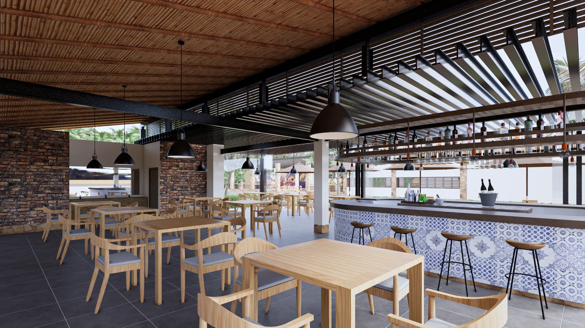
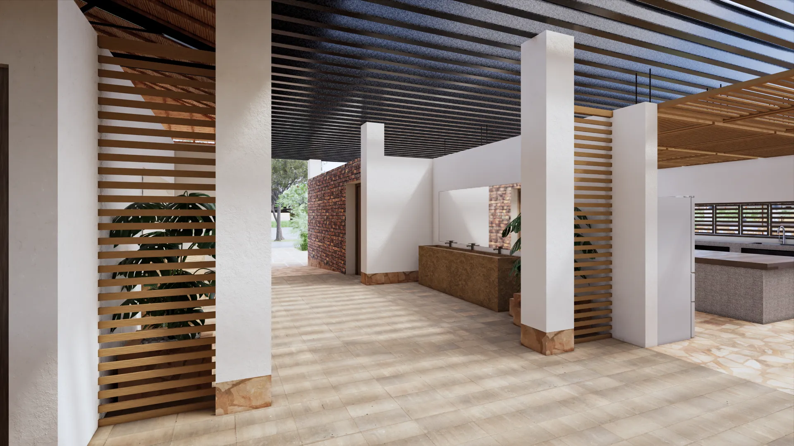
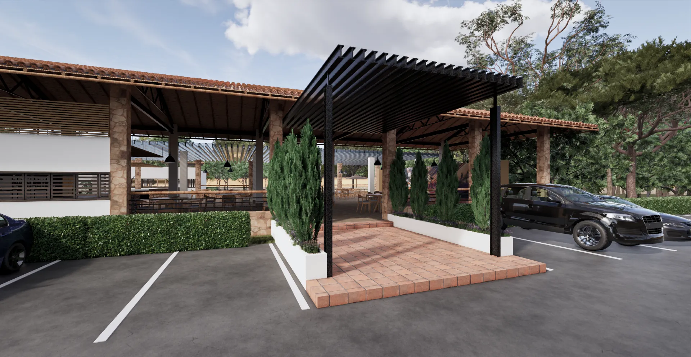

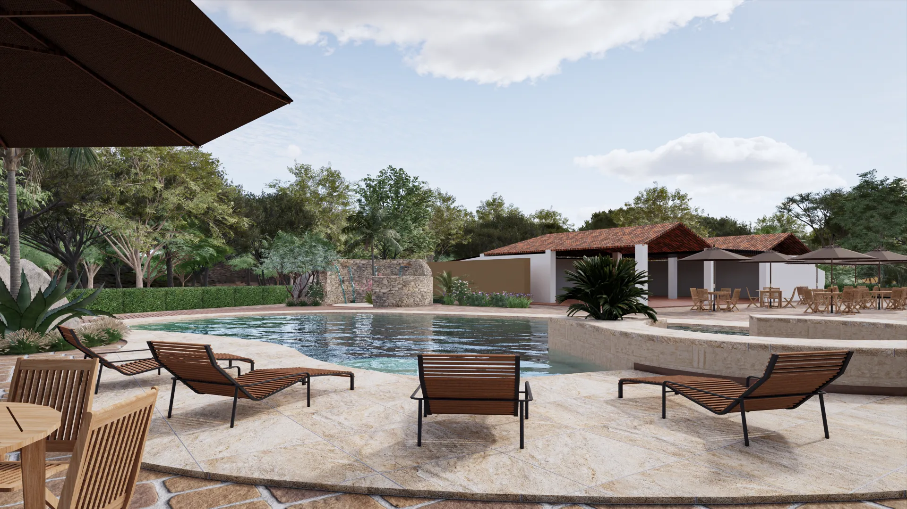
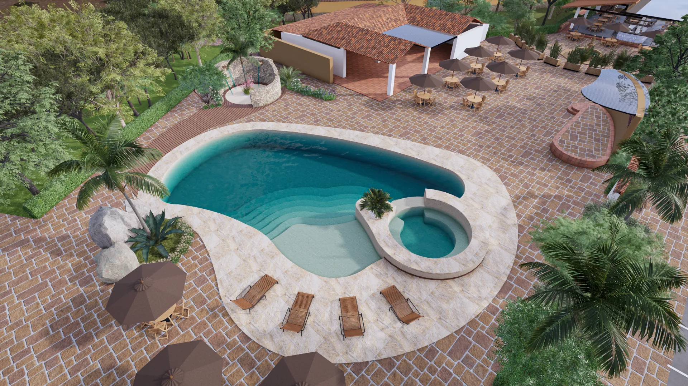
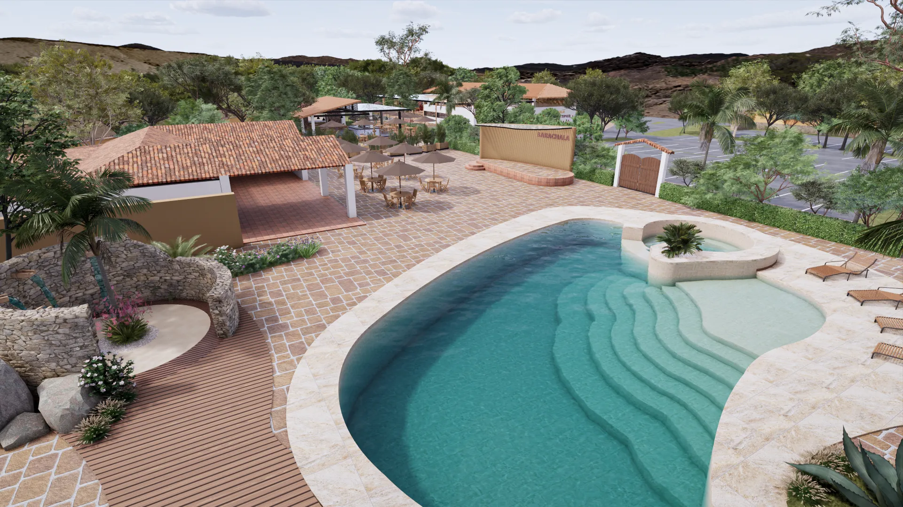
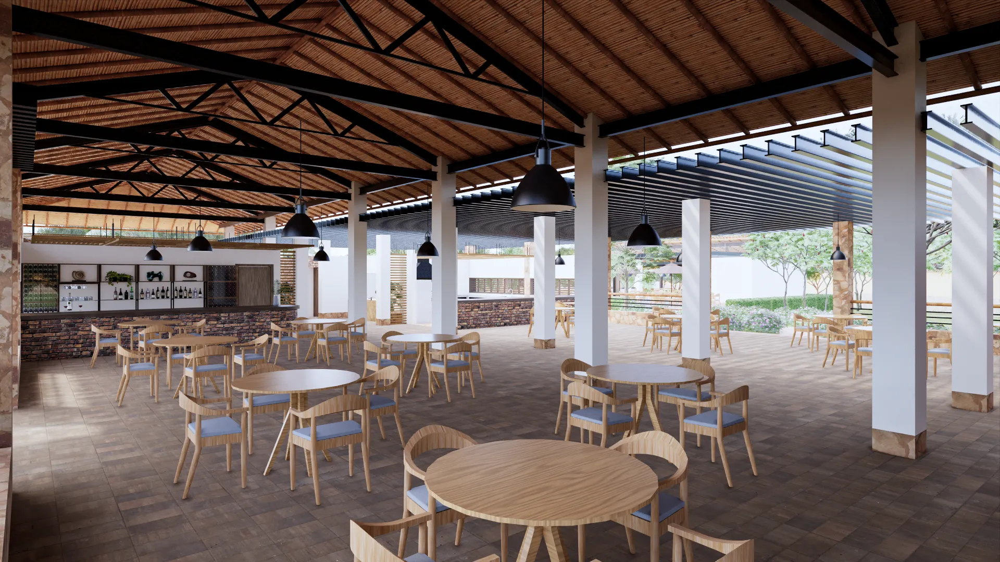
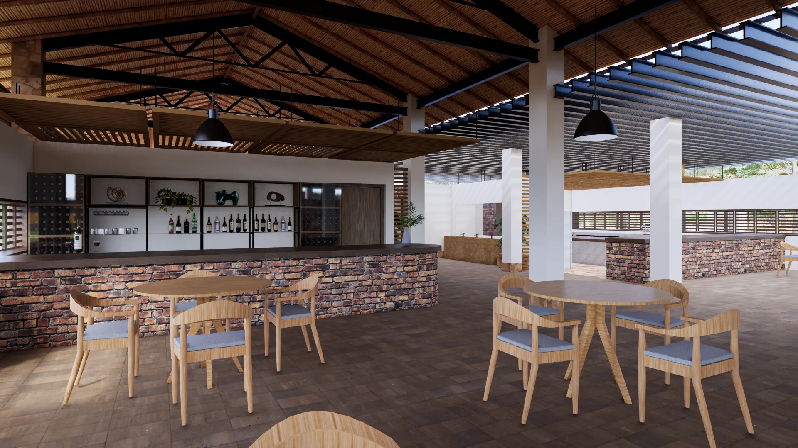
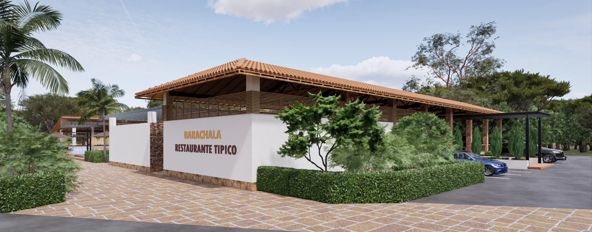
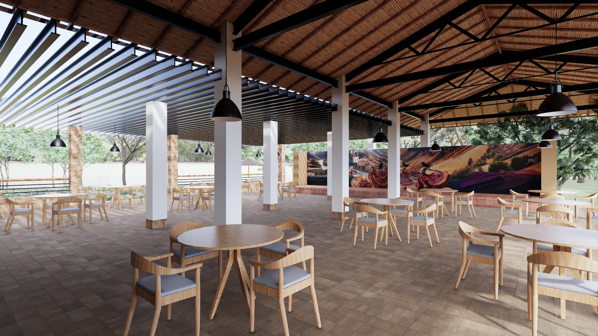
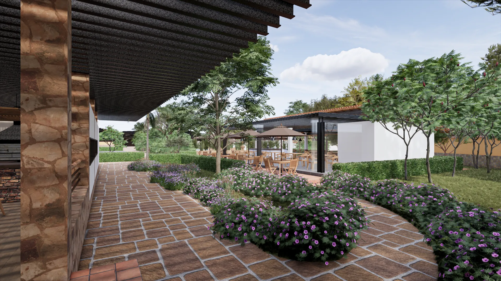
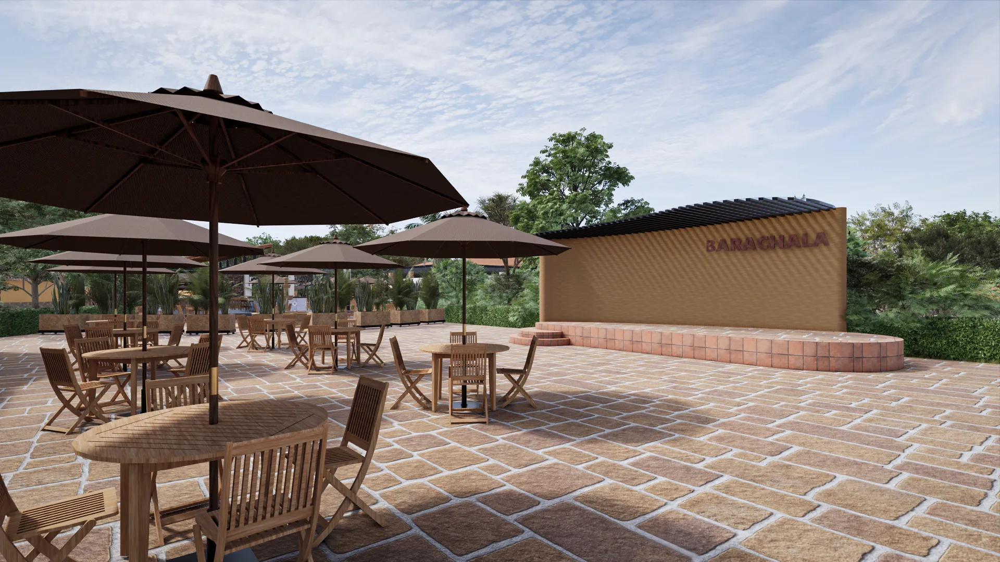
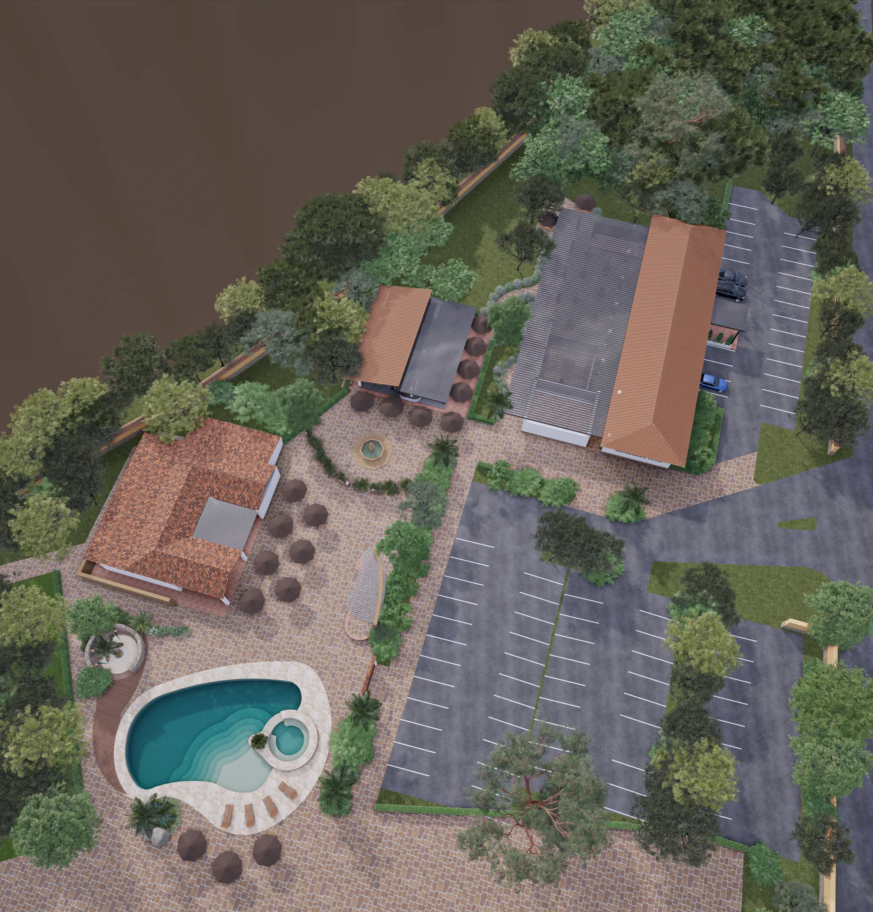